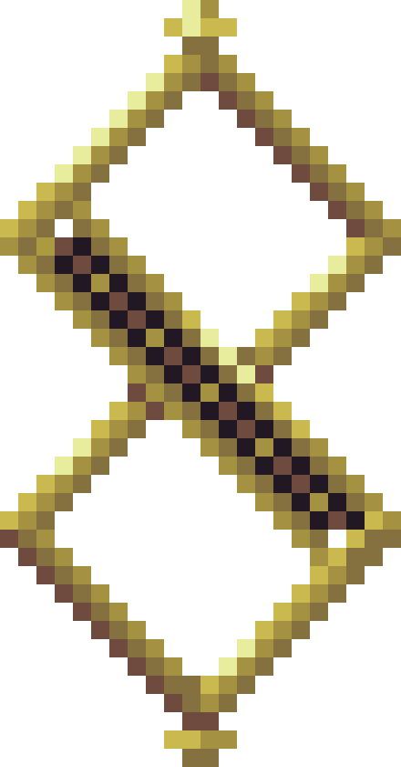

-
Penitent One
Descrição
The Penitent One is the lone survivor of a congregation called the Brotherhood of the Silent Sorrow, so named because those in the congregation have taken a vow of silence as a form of penance. The Brotherhood's silence is a reflection upon the believed silence of the Twisted One, as evidenced by the lore of the Key to the Chamber of the Eldest Brother. The entirety of the Brotherhood was cast out for a past indiscretion or some sort of conflict with the Church. The nature of this indiscretion is not made clear, but it is possible that it relates to the Penitent One's mission to reach the Cradle of Affliction.
-
Gémino

Descrição
This mysterious character, Gémino, is a prisoner inside a metal statue in the snowy hills of Where Olive Trees Wither. It's assumed that he was put here by members of the Church as punishment for some criminal act. Upon speaking with him for the first time, he will ask the Penitent One to fetch him the sacred olive oil used by the sisters of the Convent of Our Lady of the Charred Visage. He will then gift Golden Thimble, which is used to carry the oil. The sacred olive oil can be found in a chalice after the boss room of Our Lady of the Charred Visage. The oil cannot be collected without the Golden Thimble. After Gémino dies, a blooming bed of flowers and the Frozen Olive can be found where Gémino was standing.
-
Spear of the Cathedra
Descrição
The Spear of the Cathedra appears to be a bishop of the Mother Church armed with a spear on top of a throne, also called a cathedra, hence the name.